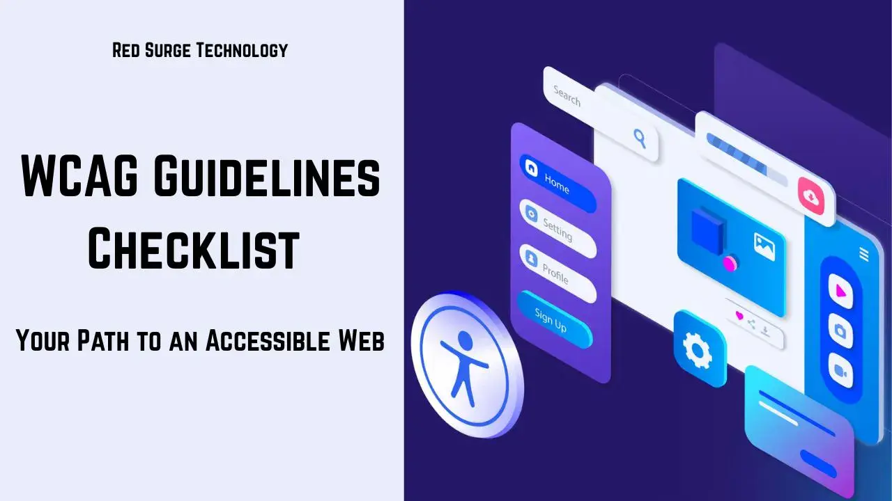

You know what's wild? We pour countless hours into making our designs look sleek, our animations feel polished, and our user flows feel intuitive — yet sometimes we overlook the most fundamental thing: making sure everyone can actually use the site we built. That's where a solid WCAG guidelines checklist comes in, practically tapping you on the shoulder to say, "Hey, don't leave anyone behind."
The Web Content Accessibility Guidelines (WCAG), published by the World Wide Web Consortium (W3C), provide the internationally recognized standard for digital accessibility. Following these guidelines isn't just about avoiding lawsuits — though that's a legitimate concern for many businesses. It's about creating experiences that work for the roughly 16% of the global population living with some form of disability. That includes people who are blind or have low vision, people who are deaf or hard of hearing, people with motor impairments who can't use a mouse, and people with cognitive disabilities who benefit from clear, consistent interfaces.
This guide walks you through everything you need: what the different WCAG conformance levels actually mean, why a checklist approach saves time and reduces risk, a detailed breakdown of every Level A and AA criterion you need to meet, a real-world story of what happens when accessibility testing falls short, and practical strategies for weaving accessibility into your design and development workflow. Let's get into it.
WCAG is organized into three conformance levels, each building on the one before it. Think of them like building code requirements for a physical space: Level A is the fire exit — non-negotiable and life-saving. Level AA is the wheelchair ramp — expected and widely referenced in regulations. Level AAA is the heated sidewalk that melts snow automatically — admirable, but not always practical.
Level A criteria are the minimum bar for accessibility. Without these, people with certain disabilities literally cannot use your website. These are not "nice to have" — they're "the door is locked" issues.
At Level A, you must provide text alternatives for all non-text content (like alt text on images), ensure all functionality is available through a keyboard interface, never use content that flashes more than three times per second (a seizure risk), provide clear labels for form inputs, and ensure the page has a meaningful title. If you miss any Level A criterion, you're not just failing an audit — you're actively excluding users.
Level AA is the conformance level referenced by most accessibility laws, regulations, and procurement requirements. When someone says a website "meets WCAG standards," they almost always mean Level AA. This is the target for the vast majority of websites and applications.
Level AA builds on Level A by adding requirements that address the most common and impactful barriers. You need to maintain a minimum color contrast ratio of 4.5:1 for normal text, provide captions for all live audio content in synchronized media, ensure consistent navigation and identification across pages, make sure error messages clearly identify the problem and suggest a fix, and maintain a visible focus indicator for keyboard users.
Level AAA criteria represent the gold standard of accessibility. They include things like providing sign language interpretation for all prerecorded audio, ensuring reading level doesn't exceed lower secondary education, and offering extended audio descriptions for video content. While admirable, many AAA criteria are impractical for all content types and all contexts. Most organizations target AA compliance and selectively implement AAA criteria where feasible.
Here's the reality: when you're juggling stakeholder meetings, design revisions, development sprints, and that surprise "Can we launch a week early?" email, accessibility requirements can slip through the cracks. A checklist doesn't just help — it's your safety net.
Behind every accessibility guideline is a real person trying to accomplish something. Someone using a screen reader to navigate your site and hitting a button that wasn't coded for keyboard focus. Someone with low vision squinting at light grey text on a white background. Someone who can't use a mouse struggling with a dropdown menu that only responds to hover events. Each checklist item you verify is a barrier you've removed for a real person.
ADA lawsuits related to website accessibility have increased dramatically in recent years, and courts have consistently ruled that websites qualify as places of public accommodation. In the United States, thousands of demand letters and lawsuits are filed annually. Beyond US law, the European Accessibility Act came into force in June 2025, expanding requirements across the EU. A documented checklist review process demonstrates good-faith effort and can provide significant legal protection.
Many accessibility best practices directly overlap with search engine optimization. Descriptive alt text helps Google understand your images. Proper heading hierarchy helps search engines parse your content structure. Descriptive link text provides contextual relevance signals. Fast, clean, semantic HTML — which accessibility demands — is exactly what search engines reward. Building for accessibility and building for SEO are largely the same work.
Below is a comprehensive breakdown of the criteria you need to meet for WCAG 2.2 Level AA compliance, organized by category. Each item includes the specific WCAG success criterion reference, what it requires, and how to test for it.
All images, icons, charts, and other non-text content must have a
text alternative that conveys the same purpose. For decorative
images, use an empty alt attribute (alt="") so screen
readers skip them. For complex images like charts, provide a longer
description nearby or linked.
How to test: Run an automated scan with WAVE or axe. Then manually review every image on key pages. Ask yourself: if I couldn't see this image, would the alt text give me the same information?
For audio-only content (podcasts, audio clips), provide a text transcript. For video-only content (no audio track), provide either a text transcript or an audio track describing the visual content.
How to test: Check that every audio and video asset on your site has an associated transcript or audio description.
All prerecorded video with audio must have synchronized captions. Auto-generated captions alone are insufficient — they must be reviewed and corrected for accuracy.
How to test: Enable captions on every video and verify they match the spoken content, identify speakers, and include relevant non-speech sounds.
For prerecorded video, provide either an audio description track that narrates important visual information, or a text alternative that combines the transcript with descriptions of visual content.
How to test: Watch each video without looking at the screen. Can you understand everything important from the audio description or transcript alone?
Live video broadcasts with audio must have real-time captions. This is particularly relevant for webinars, live streams, and virtual events.
How to test: Schedule a live test broadcast with your captioning service and verify captions appear in real-time with acceptable accuracy.
All prerecorded video content must include an audio description track that narrates important visual details during natural pauses in the audio.
How to test: Play the video with the audio description track enabled. Verify that scene changes, on-screen text, facial expressions, and key actions are described.
Information, structure, and relationships conveyed through visual presentation must be programmatically available or available in text. This covers heading hierarchy, list markup, table headers, form label associations, and semantic HTML usage.
How to test: Inspect your HTML. Are headings using
h1-h6 elements correctly? Are lists in
ul or ol elements? Do form inputs have
properly associated label elements?
When the reading sequence affects meaning, the correct reading order must be programmatically determinable. The DOM order should match the visual reading order.
How to test: Disable CSS and read the raw content. Does it still flow in a logical order? Screen readers follow DOM order, not visual position.
Instructions must not rely solely on sensory characteristics like shape, color, size, visual location, orientation, or sound. For example, "Click the round button" or "Press the red button" fails this criterion.
How to test: Review all instructional text. If any instruction references only visual or auditory cues, add text labels.
Content must not restrict its view and operation to a single display orientation, such as portrait or landscape, unless a specific orientation is essential.
How to test: Rotate your device between portrait and landscape. Does the content reflow correctly? Are all functions still available?
For input fields that collect common user information, the purpose of each field must be programmatically identifiable. Use HTML autocomplete attributes to identify fields like name, email, address, and phone number.
How to test: Inspect form inputs and verify that
appropriate autocomplete attributes are present for
common fields.
Color must not be used as the only visual means of conveying information, indicating an action, prompting a response, or distinguishing a visual element. Error states, required fields, and links must have additional indicators beyond color.
How to test: View your page in grayscale. Can you still identify links, error messages, and required fields?
If audio plays automatically for more than three seconds, there must be a mechanism to pause, stop, or control the volume independently from the system volume.
How to test: Check any page with auto-playing audio. Is there a visible, accessible control to stop or adjust it?
Text and images of text must have a contrast ratio of at least 4.5:1 against their background, except for large text (18pt+ or 14pt+ bold), which requires 3:1. Logos and decorative text are exempt.
How to test: Use the WebAIM Contrast Checker or axe DevTools to test every text/background color combination in your design system. Pay special attention to grey text on light backgrounds — this is the most common failure.
Users must be able to resize text up to 200% without loss of content or functionality, and without requiring horizontal scrolling (except for content that inherently requires two-dimensional layout, like data tables or maps).
How to test: Set your browser zoom to 200%. Does all content remain readable and functional? Use relative units (rem, em, %) in your CSS rather than fixed pixel values to support this.
Text should not be embedded in images unless the visual presentation is essential (like a logo), or the text is purely decorative. Use styled HTML text instead of images containing text whenever possible.
How to test: Scan your site for images that contain text. Can any of them be replaced with styled HTML text?
Content must be viewable at 320px width without horizontal scrolling, and without requiring two-dimensional scrolling for vertical content. This ensures usability on mobile devices and at high zoom levels.
How to test: Resize your browser to 320px wide or test on a small mobile device. Can you read and interact with everything without horizontal scrolling?
User interface components (buttons, form fields, icons) and graphical objects must have a contrast ratio of at least 3:1 against adjacent colors. This includes focus indicators, input borders, and chart elements.
How to test: Check button borders, input field boundaries, and icon colors against their backgrounds. The axe DevTools contrast checker includes non-text contrast checks.
Users must be able to override text spacing to improve readability. When line height is set to 1.5, paragraph spacing to 2em, letter spacing to 0.12em, and word spacing to 0.16em, no content or functionality should be lost.
How to test: Use a browser extension or bookmarklet to apply text spacing overrides. Verify that all text remains visible and no elements overlap or clip.
Content that appears on hover or focus (tooltips, dropdowns, popovers) must be dismissible without moving the pointer or focus, hoverable so the user can move their pointer to the new content, and persistent until dismissed.
How to test: Trigger every hover/focus-revealed element. Can you dismiss it with the Escape key? Can you move your mouse to the revealed content without it disappearing? Does it remain visible until you move away?
All functionality must be operable through a keyboard interface without requiring specific timings for individual keystrokes. Every link, button, form control, and custom widget must be reachable and usable via keyboard alone.
How to test: Put your mouse aside. Use only Tab, Shift+Tab, Enter, Space, and arrow keys to navigate and operate every interactive element on the page. Can you do everything?
Keyboard focus must never become trapped in a component. If focus can be moved to a component using the keyboard, it must be movable away from that component using only the keyboard.
How to test: Tab into every modal, dropdown, autocomplete, and rich text editor. Can you always Tab out? Test the Escape key as a common escape mechanism.
Single-character keyboard shortcuts must be either remappable, able to be turned off, or only active when the relevant component has focus. This prevents accidental activation for speech input users.
How to test: Identify any single-key shortcuts in your application. Verify they can be disabled, remapped, or are scoped to focused components.
For any time limit set by the content, at least one must be true: the user can turn off the limit, the user can adjust the limit to at least ten times the default, or the user is warned before time expires and given at least 20 seconds to extend.
How to test: Identify any session timeouts, quiz timers, or auto-advancing carousels. Can the user control or disable them?
For any moving, blinking, scrolling, or auto-updating content that starts automatically, lasts more than five seconds, and is presented in parallel with other content, there must be a mechanism to pause, stop, or hide it.
How to test: Identify auto-playing carousels, animated backgrounds, live chat widgets, and auto-refreshing content. Can each be paused or hidden?
No page content may flash more than three times in any one-second period. This prevents triggering photosensitive seizures.
How to test: Review any animated or video content. Use a flash analysis tool if you're uncertain about a specific animation.
Users must be able to bypass repeated blocks of content (like navigation menus). Provide a "Skip to main content" link at the top of each page.
How to test: Tab to the first focusable element on the page. Is there a visible skip link? Does it work correctly?
Each page must have a descriptive, unique title element
that identifies the page's topic or purpose.
How to test: Check every page's browser tab title. Is it descriptive and unique? Does it help users understand where they are?
When users navigate sequentially through content, focusable components must receive focus in an order that preserves meaning and operability. The tab order should follow the visual reading order.
How to test: Tab through every interactive element. Does the focus order follow the logical reading order? Does anything jump unexpectedly?
The purpose of each link must be determinable from the link text alone, or from the link text together with its programmatically determined context. Avoid "click here" and "read more" links.
How to test: Review all links on each page. If you read each link text out of context, would you know where it leads?
Users must be able to locate pages in more than one way, unless the page is a step in a process. Provide at least two of: navigation menus, site search, site map, table of contents, or links between related pages.
How to test: Can users reach any page through at least two different methods (search + navigation, for example)?
Headings and labels must describe the topic or purpose of the content they introduce. They should be clear, descriptive, and informative — not clever or cryptic.
How to test: Read every heading and form label. Does each one clearly describe what follows? Would a new user understand the structure?
Any keyboard-operable user interface must have a visible focus indicator. Users navigating by keyboard must always be able to see which element currently has focus.
How to test: Tab through the entire page. Is the
focus indicator clearly visible at every step? Never use
outline: none without providing a visible alternative.
When a user interface component receives keyboard focus, it must not be entirely hidden by other content. The focused element must be at least partially visible.
How to test: Tab through your page, especially through sticky headers, fixed footers, and modals. Is the focused element always visible, or does it disappear behind other elements?
Any functionality that uses multipoint or path-based gestures (pinch zoom, swiping, dragging) must also be operable with a single pointer without a path-based gesture, unless the multipoint gesture is essential.
How to test: Identify any gesture-dependent interactions (carousels, maps, sliders). Can they be operated with simple taps and clicks instead?
Functions operated by a single pointer must use the up-event for execution, provide an abort or undo mechanism, or ensure the down-event is not used for execution. This prevents accidental activation.
How to test: Click and hold on every button and interactive element, then drag away before releasing. Does the action cancel rather than execute?
For UI components with visible text labels, the accessible name must include the visible label text, ideally at the beginning. This ensures speech recognition users can speak the visible label to activate the control.
How to test: Inspect the accessible name of every labeled component. Does it contain the visible label text?
Functions operated by device motion (shaking, tilting) must also be operable through conventional UI controls, and users must be able to disable motion actuation.
How to test: Identify any motion-triggered features. Is there an alternative control method and a way to disable motion?
Any functionality that requires a dragging movement must also be achievable by single-pointer actions without dragging, unless dragging is essential or the functionality is determined by the user agent.
How to test: For every drag-and-drop interface, can the same action be completed with simple clicks (select source, select destination)?
Interactive elements must have a target size of at least 24 by 24 CSS pixels, with some exceptions (inline links, spacing provided by adjacent elements, essential small targets).
How to test: Measure the clickable area of every button, icon, and interactive element. Is it at least 24x24px?
The default human language of each page must be programmatically
determinable. Set the lang attribute on the
html element.
How to test: Inspect the html element.
Is lang set to the correct language code (e.g.,
lang="en")?
If a page contains content in a language different from the default,
that content must have its language programmatically identified
using the lang attribute on the containing element.
How to test: Search for any passages in a language
different from the page default. Do they have a
lang attribute?
When a component receives focus, it must not initiate a change of context — no automatic page redirects, no form submissions, no new windows opening.
How to test: Tab through every element. Does anything unexpected happen when an element receives focus?
Changing a form control's setting must not automatically cause a change of context unless the user has been advised of the behavior in advance. Don't auto-submit forms or redirect on selection changes.
How to test: Interact with every form control and filter. Does changing a value trigger an unexpected page change?
Navigation mechanisms repeated across multiple pages must appear in the same relative order each time, unless a change is initiated by the user.
How to test: Compare your navigation across different pages. Is the order and structure consistent?
Components with the same functionality across pages must be identified consistently. If a search icon means "search" on one page, the same icon shouldn't mean "filter" on another.
How to test: Compare icons, button labels, and form field names across pages. Are functionally identical elements labeled consistently?
If help mechanisms (contact information, FAQ, chat, self-help options) are repeated on multiple pages, they must appear in the same relative order.
How to test: Identify all help mechanisms on your site. Do they appear in a consistent location?
When an input error is automatically detected, the error must be described in text and the item in error must be identified. Error messages should be clear, specific, and helpful.
How to test: Submit every form with invalid data. Is each error clearly described? Does the user know which field has the error and how to fix it?
All content requiring user input must have labels or instructions. Form fields need visible labels. Required fields need indicators. Expected formats need to be specified.
How to test: Review every form. Does every field have a visible, persistent label? Are required fields clearly marked? Are format expectations communicated?
When an input error is detected and correction suggestions are known, the suggestions must be provided to the user, unless doing so would compromise security or purpose.
How to test: For every form validation error, is there a helpful suggestion? "Invalid email" should be "Please enter an email with an @ symbol, like name@example.com."
For forms that submit legal commitments, financial transactions, or modify/delete user data, submissions must be reversible, checked for errors, or confirmed before finalizing.
How to test: Identify any forms that commit users to legal or financial actions. Is there a review/confirm/cancel step before final submission?
Authentication processes must not rely on cognitive function tests (like memorizing a password or solving a puzzle) unless an alternative is provided. Password managers and "forgot password" flows should be supported.
How to test: Test your login flow. Can users paste passwords? Do password managers work? Is there a password recovery option?
For all user interface components, the name, role, and value must be programmatically determinable. States, properties, and values must be programmatically settable. Custom widgets must expose proper semantics through native HTML or ARIA.
How to test: Use a screen reader or browser accessibility inspector to verify that every interactive element has a proper accessible name, role, and current state.
Status messages that don't receive focus must be announced to screen
reader users without interrupting their current task. Use
role="status", role="alert", or
aria-live regions appropriately.
How to test: Trigger status messages (form submission confirmation, "item added to cart," search results count). Are they announced by screen readers without requiring focus movement?
Last November, I was helping a small arts nonprofit set up a virtual holiday craft fair — think cozy tutorials, live music performances, and a global audience tuning in from different time zones. We prepped everything meticulously: promotional emails, social media posts, downloadable ornament templates, and what I thought was a solid captioning setup for the live segments.
The event launched smoothly. The first performer strummed their guitar, the chat filled with holiday emojis, and everything looked great — until the live craft demonstration began. The captioning feed, which was supposed to switch to identify the new speaker and describe the step-by-step folding technique, instead stubbornly displayed the previous performer's name and lyrics throughout the entire 25-minute craft segment. Viewers wrote in the chat: "I can't follow along," "The captions are from the last session," and "Is there a transcript somewhere?"
I felt a wave of embarrassment — but also clarity. The automated captioning service we'd relied on was technically functional, but nobody had tested it with a live handoff between segments. The tool was fine; our process was the failure point. We'd checked the box for "captions provided" without verifying that they were accurate, timely, and appropriate for each specific segment of the event.
From that day forward, every live event I'm involved with includes a 15-minute dry run with a volunteer reading at different speeds and switching between speakers. We test the caption handoff, verify speaker identification, and confirm that non-verbal sounds (like clapping, laughter, or a doorbell ringing) appear correctly. That small investment of time has caught issues before they affected real viewers at every event since.
The lesson: testing under real conditions matters more than checking boxes on a list. Accessibility is an ongoing conversation with your users — not a certification you earn once and frame on the wall.
The most effective accessibility programs don't treat compliance as a separate phase or a pre-launch audit. They weave accessibility thinking into every stage of the project lifecycle. Here's what that looks like in practice.
Kick off every project by explicitly defining which WCAG level you're targeting. Write it into your project brief, your acceptance criteria, and your definition of done. When stakeholders ask "Why does this feature cost more?" or "Why is this taking longer?", having a documented accessibility standard provides a clear, defensible answer. It also ensures that designers, developers, content creators, and QA testers are all working toward the same goal.
Accessibility decisions made during design prevent exponentially more rework than fixes made during development. Sketch high-contrast wireframes from the start. Annotate your mockups with alt text descriptions for key images. Define a color palette that meets AA contrast requirements before a single line of CSS is written. Document heading hierarchy in your wireframes. Specify focus indicator styles alongside hover and active states. Design the keyboard interaction pattern for every custom component before a developer starts building it.
A practical habit: run every new color combination through a contrast checker before adding it to your design system. The five minutes this takes saves hours of CSS fixes later.
Run automated accessibility scans at the end of every sprint — not just before launch. Tools like axe DevTools, Lighthouse, and Pa11y can be integrated into your CI/CD pipeline to catch regressions automatically. But automated tools catch only 30-40% of issues. Manual testing is irreplaceable: tab through every new feature with a keyboard, test custom components with a screen reader (VoiceOver on Mac, NVDA on Windows are both free), and verify that error messages and status updates are announced correctly.
Write semantic HTML from the start. Use button elements
for buttons, not div elements with click handlers.
Associate every form input with a label. Structure pages with landmark
elements like header, nav,
main, and footer. Most accessibility issues
that make it to production trace back to basic HTML choices made early
in development.
Before pressing "Go live," perform a final manual pass against your WCAG checklist. Document any remaining issues, assign owners, and set deadlines for resolution. Schedule a follow-up audit one week post-launch to catch issues that only surface under real traffic. Accessibility isn't a launch-day checkbox — it's a commitment to continuous improvement.
You don't need an expensive enterprise suite to test for accessibility. Here are the tools I use regularly — all of which have free tiers sufficient for most projects.
The key insight: no single tool catches everything. Automated tools find the objective, programmatically detectable issues. Manual keyboard and screen reader testing catches the subjective, experience-level issues. Use both.
Accessibility standards aren't frozen in time. WCAG 2.2 was published in October 2023, adding nine new success criteria focused on cognitive accessibility, low vision, and motor impairments. WCAG 3.0 is under active development and will represent a significant restructuring of the guidelines when it's finalized.
To stay current without constant fire drills:
Accessibility isn't a trend, a marketing checkbox, or a legal liability to manage. It's a commitment to building digital spaces that work for everyone who arrives at them — regardless of how they perceive, navigate, or interact with the web.
A robust WCAG guidelines checklist, used consistently throughout your workflow, transforms accessibility from an overwhelming, abstract requirement into a concrete, achievable set of practices. It builds empathy into your process by reminding you that behind every criterion is a real person trying to accomplish something on your site. It shields you from legal exposure by documenting your good-faith efforts. And it sweetens your SEO by producing cleaner, more semantic, more usable code.
Take this checklist. Tuck it into your next project charter. Set a recurring calendar reminder for your quarterly accessibility review. And the next time you're about to launch, run through that keyboard test one more time. There's nothing quite like an accessible site to bring a warm glow to your users' faces — and, honestly, to yours too.
If you enjoyed this article, check out our guide on web accessibility for beginners or our post on understanding Laravel guards. As always, if you have any questions or comments, feel free to contact us.